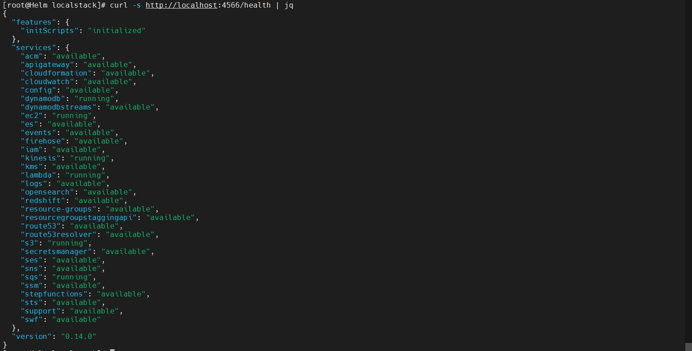
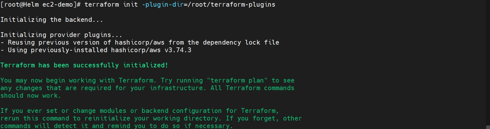
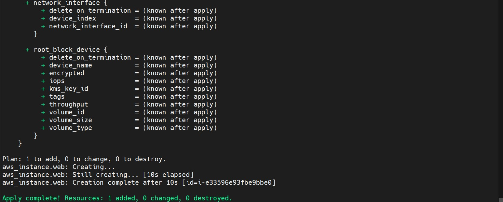
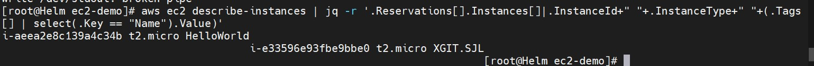

使用 localstack 来测试 terraform
terraform 作为基础设置即代码的首选工具，为基础设施的自动化提供了极大便利。但是 terraform 资源清单的测试却一直没有好的办法，能 plan 成功不代表能 apply 成功。
LocalStack 是开发 JIRA 的公司 Atlassian 开发的, 用 Python “山寨”了 AWS 的 API, 通过 REST API提供跟 AWS 一模一样的服务。
那么意味着我们可用利用 lcoalstack 作为 terraform 编排 aws 的测试工具。
localstack 部署：
采用
docker-compose进行部署：1
2
3
4
5
6
7
8
9
10
11
12
13
14
15
16
17
18
19
20
21
22
23
24
25
26
27
28
29
30version: "3.8"
services:
localstack:
container_name: "${LOCALSTACK_DOCKER_NAME-localstack_main}"
image: localstack/localstack
network_mode: bridge
ports:
- "127.0.0.1:4510-4559:4510-4559" # external service port range
- "127.0.0.1:4566:4566" # LocalStack Edge Proxy
environment:
- SERVICES=${SERVICES-acm,apigateway
,cloudformation,cloudwatch,dynamodb
,dynamodbstreams,ec2,es,events
,firehose,iam,kinesis,kms,lambda,rds
,route53,s3,s3api,secretsmanager,ses,sns
,sqs,ssm,stepfunctions,sts}
- DEBUG=${DEBUG-1}
- DATA_DIR=${DATA_DIR-/tmp/localstack/data}
- LAMBDA_EXECUTOR=${LAMBDA_EXECUTOR-docker}
- HOST_TMP_FOLDER=${TMPDIR:-/tmp/}localstack
- DOCKER_HOST=unix:///var/run/docker.sock
volumes:
- "${TMPDIR:-/tmp}/localstack:/tmp/localstack"
- "/var/run/docker.sock:/var/run/docker.sock"
networks:
default:
networks:
default:
name: localstack-tutorial部署：
1
2
3
4[root@Helm localstack]# docker-compose up -d
[root@Helm localstack]# docker-compose ls
NAME STATUS
localstack running(2)验证：

terraform 测试：
测试样例：
1
2
3
4
5
6
7
8
9
10
11
12
13
14
15
16
17
18
19
20
21
22
23
24
25
26
27
28
29
30
31
32
33
34
35
36
37
38
39
40
41
42
43
44
45
46
47
48
49
50
51terraform {
required_providers {
aws = {
source = "hashicorp/aws"
version = "= 3.74.3"
}
}
}
provider "aws" {
region = "ap-southeast-2"
access_key = "test"
secret_key = "test"
skip_credentials_validation = true
skip_metadata_api_check = true
skip_requesting_account_id = true
// 4510-4559:4510-4559
endpoints {
acm = "http://localhost:4566"
apigateway = "http://localhost:4566"
cloudformation = "http://localhost:4566"
cloudwatch = "http://localhost:4566"
dynamodb = "http://localhost:4566"
ec2 = "http://localhost:4566"
es = "http://localhost:4566"
firehose = "http://localhost:4566"
iam = "http://localhost:4566"
kinesis = "http://localhost:4566"
lambda = "http://localhost:4566"
rds = "http://localhost:4566"
redshift = "http://localhost:4566"
route53 = "http://localhost:4566"
s3 = "http://localhost:4566"
secretsmanager = "http://localhost:4566"
ses = "http://localhost:4566"
sns = "http://localhost:4566"
sqs = "http://localhost:4566"
ssm = "http://localhost:4566"
stepfunctions = "http://localhost:4566"
sts = "http://localhost:4566"
}
}
resource "aws_instance" "web" {
ami = "ami-123456"
instance_type = "t2.micro"
tags = {
Name = "XGIT.SJL"
}
}测试：
terraform init
terraform planterraform apply1
2
3
4
5
6
7
8
9
10
11
12
13
14
15
16[root@Helm ec2-demo]# terraform apply --auto-approve
Terraform used the selected providers to generate the following execution plan. Resource actions are indicated with the
following symbols:
+ create
Terraform will perform the following actions:
aws_instance.web will be created
+ resource "aws_instance" "web" {
+ ami = "ami-123456"
+ arn = (known after apply)
+ associate_public_ip_address = (known after apply)
+ availability_zone = (known after apply)
+ cpu_core_count = (known after apply)
+ cpu_threads_per_core = (known after apply)
用
aws-cli查看一下创建的ec2实例，如下图所示，虚拟机实例已经存在：1
2
3[root@Helm ec2-demo]# alias aws='docker run --network localstack-tutorial -it -v ~/.aws:/root/.aws -e LOCALSTACK_HOSTNAME=localstack amazon/aws-cli --endpoint-url=http://localstack:4566'
在 .aws 下创建配置文件 略